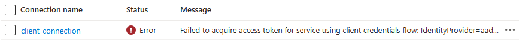

Call OAuth-Protected Backends from API Management using Credential Manager

In my previous post I showed how to call an OAuth-protected backend from API Management using its managed identity. While managed identity should be the preferred approach for calling OAuth-protected APIs, you can’t always use managed identities.
In this post, I’ll show you how to use API Management’s credential manager to call OAuth-protected backend APIs when managed identity isn’t an option. This approach provides Azure-managed token acquisition and caching while handling OAuth flows automatically.
The official documentation About API credentials and credential manager focuses on how to configure the credential manager from the Azure Portal. In this post I demonstrate how to configure this using Bicep. I’m using Entra ID with the client credentials grant flow in my example, but other Identity Providers and flows are supported.
This post is part of a series about OAuth and API Management:
- Protect APIs in Azure API Management with OAuth
- Calling OAuth-Protected APIs with Managed Identity
- Calling OAuth-Protected Backends from API Management
- Part 1: Using Credential Manager - this post
- Part 2: Using Send-Request Policy with Client Secret
- Part 3: Using Send-Request Policy with Client Certificate
- Calling OAuth-Protected APIs from CI/CD Pipelines using Federated Credentials
Table of Contents
Solution Overview
The solution demonstrates API Management calling OAuth-protected backend APIs using the credential manager:
- Azure API Management service with two APIs:
- Protected Backend API: A backend API that’s protected with OAuth using Entra ID
- Unprotected API: A public API that calls the protected backend using the credential manager
- Entra ID App Registrations: Separate app registrations for the backend API and two clients (one using a client secret and one using a client certificate), with proper role assignments
- Supporting Resources: Application Insights and Log Analytics workspace for monitoring
While this example uses an API on API Management as the protected backend, you can use the same approach to call any API protected with OAuth via Entra ID. The credential manager also supports other identity providers, so you can adapt this solution for APIs secured by other providers.
The Entra ID configuration uses the same pattern described in Protect APIs in Azure API Management with OAuth. For a detailed guide, check out that post.
I’ve created an Azure Developer CLI (azd) template called Call API Management backend with OAuth that demonstrates three scenarios: using the credential manager, a send-request policy with client secret and a send-request policy with client certificate. If you want to deploy and try the solution, check out the getting started section for the prerequisites and deployment instructions. This post focuses on calling OAuth-protected backends using the credential manager.
We’re using the BasicV2 tier because the Consumption tier doesn’t support caching, which is important for token management.
Now that we’ve covered the architecture and supporting components, let’s walk through how to configure the credential manager and apply it in your API Management policies step by step.
Implementation
The credential manager provides a managed solution for handling OAuth authentication in API Management. It consists of three major components: the credential provider, client connections and access policies. Let’s look at how to configure each using Bicep.
Credential Manager Configuration
The credential manager configuration uses Bicep to create the necessary components. Here’s the configuration from credential-manager.bicep:
// Create a Credential Provider that will be used to retrieve the
// access token for the protected backend.
resource credentialProvider 'Microsoft.ApiManagement/service/authorizationProviders@2024-06-01-preview' = {
parent: apiManagementService
name: 'credential-provider'
properties: {
displayName: 'Credential Provider'
identityProvider: 'aad'
oauth2: {
grantTypes: {
clientCredentials: {
resourceUri: oauthTargetResource
tenantId: subscription().tenantId
}
}
}
}
// Add a connection to the Credential Provider for our client
resource clientConnection 'authorizations' = {
name: 'client-connection'
properties: {
authorizationType: 'OAuth2'
oauth2grantType: 'ClientCredentials'
parameters: {
clientId: clientId
clientSecret: clientSecret
}
}
// Give the system-assigned managed identity of API Management
// permission to use the connection
resource accessPolicies 'accessPolicies' = {
name: 'client-connection-access-policy-apim-managed-identity'
properties: {
objectId: apiManagementService.identity.principalId
tenantId: apiManagementService.identity.tenantId
}
}
}
}
Note that the Bicep resource names have ‘authorization’ in their name because credential manager used to be called ‘Authorizations’.
The configuration creates three components:
-
Credential Provider: The main component that defines how to connect to the OAuth provider
- Uses
identityProvider: 'aad'which matches ‘Azure Active Directory v1’ in the portal - Configures the client credentials grant flow
- Sets the
resourceUrito the Application ID URI of the backend’s app registration (for example,api://appreg-oauthbackend-sdc-backend-luolm)
- Uses
-
Client Connection: Links the provider to specific credentials
- Contains the client ID and client secret for authentication
-
Access Policy: Controls which APIs can use the authorization
- Grants API Management’s system-assigned managed identity permission to use the connection
- When creating the client connection through the portal, this is automatically configured
The template automatically generates a client secret for the client’s app registration and stores it in Key Vault. However, we can’t reference a Key Vault secret directly in the credential manager configuration. Instead, the client secret is passed directly to the Bicep configuration and then securely managed by Azure according to the security considerations: “The access token and other secrets (for example, client secrets) are encrypted with an envelope encryption and stored in an internal, multitenant storage.".
After deployment, you can review the connection status by navigating to API Management in the Azure Portal, choosing Credential Manager, opening the credential provider and then choosing Connections. When everything is configured correctly, you’ll see a connected status:
If there are configuration issues, like an invalid or expired secret, the connection will show an error status:

Policy Implementation
The unprotected API uses the credential manager to obtain tokens automatically. Here’s the inbound section of the policy implementation from credential-manager.xml:
<inbound>
<base />
<!--
Get the access token from the Credential Provider. If this fails, an exception is raised.
-->
<get-authorization-context provider-id="credential-provider" authorization-id="client-connection"
context-variable-name="auth-context" identity-type="managed"
ignore-error="false" />
<set-header name="Authorization" exists-action="override">
<value>@("Bearer " + ((Authorization)context.Variables.GetValueOrDefault("auth-context"))?.AccessToken)</value>
</set-header>
</inbound>
The policy does two main things:
-
Token Retrieval: Uses get-authorization-context to retrieve an access token from the credential manager
- References the credential provider and client connection by their IDs
- Uses
identity-type="managed"to authenticate with API Management’s system-assigned managed identity - Stores the authorization context in a variable for later use
-
Authorization Header: Extracts the access token from the authorization context variable and adds it to the Authorization header
The credential manager handles all the complexity of token acquisition, caching and refresh automatically. The policy implementation is much simpler compared to manual token handling approaches.
Testing the Implementation
After deploying the solution, you can test the OAuth-protected backend call. Here’s a sequence diagram showing the flow:
The flow demonstrates how:
- API Management receives a request on the unprotected API
- The
get-authorization-contextpolicy retrieves an access token from the credential manager - The credential manager obtains the token from Entra ID if not cached
- The credential manager caches the token for subsequent requests
- The request is forwarded to the protected backend with the token
You can test the implementation using the following request. Replace <your-api-management-service-name> with the actual name of your API Management service:
# Operation that will call the protected backend using the credential manager
GET https://<your-api-management-service-name>.azure-api.net/unprotected/credential-manager HTTP/1.1
The request should succeed with a 200 OK response, showing that the credential manager successfully obtained an access token and called the protected backend.
Note that the response contains the details of the JWT token that was used to call the protected backend. This is for demo purposes and shouldn’t be done in production scenarios.
If you execute the request multiple times, you’ll notice that the IssuedAt value in the response doesn’t change initially, showing that the credential manager caches tokens for improved performance.
Considerations
While the credential manager provides a convenient managed solution, there are several important considerations to keep in mind:
Shared Infrastructure Dependencies
The solution that handles token retrieval and renewal does not run inside your Azure API Management instance. According to the FAQ:
Q: Is this feature supported using API Management running inside a VNet?
A: Yes, as long as outbound connectivity on port 443 is enabled to the AzureConnectors service tag.
The AzureConnectors service tag enables outbound calls to services like Azure Logic Apps and Power Platform. This indicates that the token management service for credential manager runs in the same infrastructure as these services.
IP Whitelisting Challenges
This shared infrastructure dependency has important implications for IP whitelisting. When the Identity Provider you’re retrieving the token from has implemented IP whitelisting, they either need to:
- Whitelist the AzureConnectors service tag for inbound calls if they’re on Azure
- Whitelist all IPs that make up the AzureConnectors service tag
I don’t recommend whitelisting the (large number of) IPs that are part of the service tag because these can change over time. This means you’d need to update your IP whitelisting rules frequently, which can be difficult to maintain and may introduce security risks.
I’ve encountered this issue myself several times and decided not to use the credential manager in those scenarios. Instead, I implemented custom logic within my API to retrieve tokens directly. I’ll demonstrate this approach in the next blog post.
Authentication Method Limitations
While this post demonstrates using client secrets with the credential manager, Microsoft recommends using certificates as a more secure authentication method. Certificate-based authentication works with JSON Web Token (JWT) assertions signed with a certificate, providing better security since the private key never leaves the client.
However, the credential manager doesn’t support certificate-based authentication. If you need to use certificates for OAuth authentication, you’ll need to implement token retrieval using policies within API Management. I’ll demonstrate this approach using the send-request policy in one of the next posts in this series.
Availability Limitations
At the time of writing this post, the credential manager is not available in the self-hosted gateway and several regions. See Availability for the current status.
Conclusion
API Management’s credential manager provides a managed solution for calling OAuth-protected backend APIs with automatic token handling. The key benefits include:
- Azure-managed solution: The platform handles token acquisition, caching and renewal automatically
- Simple policy configuration: Authentication is configured through a single policy element
- Bicep support: The entire configuration can be deployed as infrastructure as code
However, the solution has several limitations that may make it unsuitable for certain environments:
- Shared infrastructure dependencies: The token management service runs outside your API Management instance and requires connectivity to the AzureConnectors service tag, which can create challenges for strict IP whitelisting requirements
- Authentication method restrictions: Only client secret authentication is supported; certificate-based authentication with JWT assertions is not available
When the credential manager doesn’t meet your requirements due to these constraints or availability limitations, you can implement OAuth token handling directly in your policies using the send-request policy, which I’ll demonstrate in upcoming posts.